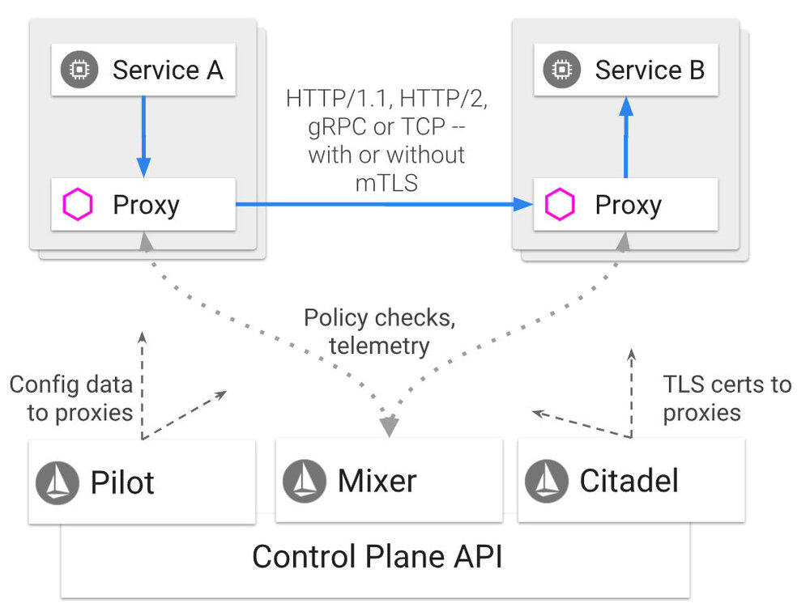

Istio 服务网格架构的概述，通常都是从对数据面和控制面的叙述开始的。
来自 Istio 的官方文档。
Istio 服务网格逻辑上分为数据平面和控制平面。
数据平面由一组以 sidecar 方式部署的智能代理（Envoy）组成。这些代理和 Mixer（一个通用的策略和遥测中心）合作，对所有微服务之间的之间所有的网络通信进行控制。
控制平面负责管理和配置代理来路由流量。此外控制平面配置 Mixer 以实施策略和收集遥测数据。

Sidecar 注入到应用的过程，可以是自动的，也可以是手动的，了解这一过程是很重要的。应用的流量会被重定向进入或流出 Sidecar，开发人员无需关心。应用接入 Istio 服务网格之后，开发者可以开始使用网格功能并从中受益。然而数据平面是如何工作的，以及需要怎样的条件才能完成这种无缝工作？本文中我们会深入到 Sidecar 注入模型中，来更清晰的了解 Sidecar 的注入过程。
Sidecar 注入
简单来说，注入 Sidecar 就是把附加的容器配置插入 Pod 模板的过程。Istio 服务网格所需的附加容器是：
istio-init
这个初始化容器用于设置 iptables 规则，让出入流量都转由 Sidecar 进行处理。和应用容器相比，初始化容器有几点不同：
- 它在应用容器之前启动，并且会运行到结束。
- 如果有多个初始化容器，只有在前一个初始化容器成功结束之后才会启动下一个。
不难看出，这种容器是非常适合执行启动或者初始化任务的，并且也无需和实际的应用容器集成到一起。istio-init 只是用来设置 iptables 的规则。
istio-proxy
这个容器是真正的 Sidecar（基于 Envoy）。
手工注入
要进行手工注入，只要用 istioctl 把前面提到的两个容器定义加入到 Pod 的模板之中即可。不论是手工注入还是自动注入，都是从 istio-sidecar-injector 以及 istio 两个 Configmap 对象中获取配置的。
我们先来看看 istio-sidecar-injector Configmap，了解一下其中的内容。
$ kubectl -n istio-system get configmap istio-sidecar-injector -o=jsonpath='{.data.config}'
部分输出内容：
policy: enabled
template: |-
initContainers:
- name: istio-init
image: docker.io/istio/proxy_init:1.0.2
args:
- "-p"
- [[ .MeshConfig.ProxyListenPort ]]
- "-u"
- 1337
.....
imagePullPolicy: IfNotPresent
securityContext:
capabilities:
add:
- NET_ADMIN
restartPolicy: Always
containers:
- name: istio-proxy
image: [[ if (isset .ObjectMeta.Annotations "sidecar.istio.io/proxyImage") -]]
"[[ index .ObjectMeta.Annotations "sidecar.istio.io/proxyImage" ]]"
[[ else -]]
docker.io/istio/proxyv2:1.0.2
[[ end -]]
args:
- proxy
- sidecar
.....
env:
.....
- name: ISTIO_META_INTERCEPTION_MODE
value: [[ or (index .ObjectMeta.Annotations "sidecar.istio.io/interceptionMode") .ProxyConfig.InterceptionMode.String ]]
imagePullPolicy: IfNotPresent
securityContext:
readOnlyRootFilesystem: true
[[ if eq (or (index .ObjectMeta.Annotations "sidecar.istio.io/interceptionMode") .ProxyConfig.InterceptionMode.String) "TPROXY" -]]
capabilities:
add:
- NET_ADMIN
restartPolicy: Always
.....
如你所见，这个 Configmap 中包含了前面提到的两个容器的配置内容：istio-init 初始化容器以及 istio-proxy 代理容器。配置中包含了容器镜像名称以及一些参数，例如拦截模式，权限要求等。
从安全角度看来，要注意 istio-init 需要 NET_ADMIN 权限，以便在 Pod 的命名空间中修改 iptables；如果 istio-proxy 设置为 TPROXY 模式，也会需要这一权限。这一权限是限制在 Pod 的命名空间之内的，这应该没问题。然而我注意到最近的 open-shift 版本好像在这方面有点问题，需要进一步确认。这方面的选项会在文末继续讨论。
要修改当前的 Pod 模板来进行注入，可以：
$ istioctl kube-inject -f demo-red.yaml | kubectl apply -f -
或者
想要使用修改过的 Configmap 或者本地 Configmap：
-
从 Configmap 中创建
inject-config.yamlandmesh-config.yaml：$ kubectl -n istio-system get configmap istio-sidecar-injector -o=jsonpath='{.data.config}' > inject-config.yaml $ kubectl -n istio-system get configmap istio -o=jsonpath='{.data.mesh}' > mesh-config.yaml -
修改现存的 Pod 模板，这里假设文件名为
demo-red.yaml：$ istioctl kube-inject --injectConfigFile inject-config.yaml --meshConfigFile mesh-config.yaml --filename demo-red.yaml --output demo-red-injected.yaml -
提交
demo-red-injected.yaml：$ kubectl apply -f demo-red-injected.yaml
上面的几个步骤中，我们使用 sidecar-injector 以及 istio 两个 Configmap 的内容修改了 Pod 模板并使用 kubectl 命令进行了提交。如果查看一下注入后的 YAML 文件，会看到前面讨论过的 Istio 的专属容器，提交到集群上之后，会看到两个容器在运行：一个是实际的应用容器，另一个则是 istio-proxy Sidecar。
$ kubectl get pods | grep demo-red
demo-red-pod-8b5df99cc-pgnl7 2/2 Running 0 3d
这里没有 3 个 Pod，这是因为 istio-init 容器是一个初始化容器，它完成任务之后就会退出——他的任务就是设置 Pod 内的 iptables 规则。要确认退出的初始化容器，可以看看 kubectl describe 的输出：
$ kubectl describe pod demo-red-pod-8b5df99cc-pgnl7
SNIPPET from the output:
Name: demo-red-pod-8b5df99cc-pgnl7
Namespace: default
.....
Labels: app=demo-red
pod-template-hash=8b5df99cc
version=version-red
Annotations: sidecar.istio.io/status={"version":"3c0b8d11844e85232bc77ad85365487638ee3134c91edda28def191c086dc23e","initContainers":["istio-init"],"containers":["istio-proxy"],"volumes":["istio-envoy","istio-certs...
Status: Running
IP: 10.32.0.6
Controlled By: ReplicaSet/demo-red-pod-8b5df99cc
Init Containers:
istio-init:
Container ID: docker://bef731eae1eb3b6c9d926cacb497bb39a7d9796db49cd14a63014fc1a177d95b
Image: docker.io/istio/proxy_init:1.0.2
Image ID: docker-pullable://docker.io/istio/proxy_init@sha256:e16a0746f46cd45a9f63c27b9e09daff5432e33a2d80c8cc0956d7d63e2f9185
.....
State: Terminated
Reason: Completed
.....
Ready: True
Containers:
demo-red:
Container ID: docker://8cd9957955ff7e534376eb6f28b56462099af6dfb8b9bc37aaf06e516175495e
Image: chugtum/blue-green-image:v3
Image ID: docker-pullable://docker.io/chugtum/blue-green-image@sha256:274756dbc215a6b2bd089c10de24fcece296f4c940067ac1a9b4aea67cf815db
State: Running
Started: Sun, 09 Dec 2018 18:12:31 -0800
Ready: True
istio-proxy:
Container ID: docker://ca5d690be8cd6557419cc19ec4e76163c14aed2336eaad7ebf17dd46ca188b4a
Image: docker.io/istio/proxyv2:1.0.2
Image ID: docker-pullable://docker.io/istio/proxyv2@sha256:54e206530ba6ca9b3820254454e01b7592e9f986d27a5640b6c03704b3b68332
Args:
proxy
sidecar
.....
State: Running
Started: Sun, 09 Dec 2018 18:12:31 -0800
Ready: True
.....
从上文的输出可以看出，istio-init 容器的 State 字段值为 Terminated，Reason 是 Completed。正在运行的两个 Pod 是应用容器 demo-red 以及 istio-proxy。
自动注入
多数时候，用户不想在每次部署应用的时候都用 istioctl 命令进行手工注入，这时候就可以使用 Istio 的自动注入功能来应对了。只要给用于部署应用的命名空间打个 istio-injection=enabled 标签就可以了。
打上标签之后，这个命名空间中新建的任何 Pod 都会被 Istio 注入 Sidecar。下面的例子里，istio-dev 命名空间中部署的 Pod 被自动注入了 Sidecar：
$ kubectl get namespaces --show-labels
NAME STATUS AGE LABELS
default Active 40d <none>
istio-dev Active 19d istio-injection=enabled
istio-system Active 24d
kube-public Active 40d
kube-system Active 40d
这是怎么完成的呢？要回答这一问题，首先要了解一下 Kubernetes 的准入控制器。
来自 Kubernetes 文档
准入控制器是一段代码，会拦截 Kubernetes API Server 收到的请求，拦截发生在认证和鉴权完成之后，对象进行持久化之前。可以定义两种类型的 Admission webhook：Validating 和 Mutating。Validating 类型的 Webhook 可以根据自定义的准入策略决定是否拒绝请求；Mutating 类型的 Webhook 可以根据自定义配置来对请求进行编辑。
Istio 的自动注入过程中会依赖 Mutating webhook。我们看看 istio-sidecar-injector 中的配置详情：
$ kubectl get mutatingwebhookconfiguration istio-sidecar-injector -o yaml
输出内容节选:
apiVersion: admissionregistration.k8s.io/v1beta1
kind: MutatingWebhookConfiguration
metadata:
annotations:
kubectl.kubernetes.io/last-applied-configuration: |
{"apiVersion":"admissionregistration.k8s.io/v1beta1","kind":"MutatingWebhookConfiguration","metadata":{"annotations":{},"labels":{"app":"istio-sidecar-injector","chart":"sidecarInjectorWebhook-1.0.1","heritage":"Tiller","release":"istio-remote"},"name":"istio-sidecar-injector","namespace":""},"webhooks":[{"clientConfig":{"caBundle":"","service":{"name":"istio-sidecar-injector","namespace":"istio-system","path":"/inject"}},"failurePolicy":"Fail","name":"sidecar-injector.istio.io","namespaceSelector":{"matchLabels":{"istio-injection":"enabled"}},"rules":[{"apiGroups":[""],"apiVersions":["v1"],"operations":["CREATE"],"resources":["pods"]}]}]}
creationTimestamp: 2018-12-10T08:40:15Z
generation: 2
labels:
app: istio-sidecar-injector
chart: sidecarInjectorWebhook-1.0.1
heritage: Tiller
release: istio-remote
name: istio-sidecar-injector
.....
webhooks:
- clientConfig:
service:
name: istio-sidecar-injector
namespace: istio-system
path: /inject
name: sidecar-injector.istio.io
namespaceSelector:
matchLabels:
istio-injection: enabled
rules:
- apiGroups:
- ""
apiVersions:
- v1
operations:
- CREATE
resources:
- pods
这里可以看到一个 namespaceSelector，其中的定义表明它的工作是针对带有 istio-injection: enabled 标签的命名空间的。这种情况下，你还会看到 Pod 创建期间进行注入时的一些其它工作和相关资源的内容。当 apiserver 收到一个符合规则的请求时，apiserver 会给 Webhook 服务发送一个准入审核的请求，Webhook 服务的定义包含在 clientConfig 配置中的 name: istio-sidecar-injector 字段里。我们会看到，这个服务正在 istio-system 命名空间里运行。
$ kubectl get svc --namespace=istio-system | grep sidecar-injector
istio-sidecar-injector ClusterIP 10.102.70.184 <none> 443/TCP 24d
这个配置总体上来说，完成了我们手工注入所需完成的工作。只不过是它是在 Pod 创建的过程中自动完成的，所以你也不会看到 Deployment 对象发生了任何变化。可以用 kubectl describe 命令来查看 Sidecar 和初始化容器。如果想要修改注入逻辑，例如 Istio 自动注入的生效范围，可以编辑 MutatingWebhookConfiguration，然后重启 Sidecar injector Pod。
Sidecar 的自动注入过程除了根据 namespaceSelector 选择命名空间之外，还受到缺省注入策略以及 Pod 自身注解的影响。
再看看 istio-sidecar-injector ConfigMap 中的缺省策略定义。可以看到，缺省是启用的。
$ kubectl -n istio-system get configmap istio-sidecar-injector -o=jsonpath='{.data.config}'
SNIPPET from the output:
policy: enabled
template: |-
initContainers:
- name: istio-init
image: "gcr.io/istio-release/proxy_init:1.0.2"
args:
- "-p"
- [[ .MeshConfig.ProxyListenPort ]]
还可以在 Pod 模板中使用注解 sidecar.istio.io/inject 覆盖缺省策略。下面的例子中的 Deployment 用这种方式禁用了自动注入：
apiVersion: extensions/v1beta1
kind: Deployment
metadata:
name: ignored
spec:
template:
metadata:
annotations:
sidecar.istio.io/inject: "false"
spec:
containers:
- name: ignored
image: tutum/curl
command: ["/bin/sleep","infinity"]
这个例子展示了很多可能性，可以从命名空间标签、ConfigMap 或者 Pod 中分别进行控制：
- Webhooks 定义中的
namespaceSelector（istio-injection: enabled） - 缺省策略（在 ConfigMap
istio-sidecar-injector中定义） - Pod 注解（
sidecar.istio.io/inject）
注入状态表中，根据上面三个因素的不同，可以看到有不同的注入结果。
从应用容器到 Sidecar 代理的通信
现在我们知道了 Sidecar 容器和初始化容器被注入到应用中的过程了，Sidecar 代理是如何截获进出容器的流量呢？我们前面提到过，这是通过对 Pod 命名空间中 iptable 规则的设置来完成的，这个设置过程由 istio-init 容器来控制。现在可以看看命名空间中到底更新了些什么。
进入前面我们部署的应用 Pod 的命名空间，看看配置完成的 iptables。我会使用 nsenter。也可以用特权模式进入容器获得同样的信息。如果无法访问节点，可以用 exec 进入 Sidecar 来执行 iptables 指令。
$ docker inspect b8de099d3510 --format '{{ .State.Pid }}'
4125
$ nsenter -t 4215 -n iptables -t nat -S
-P PREROUTING ACCEPT
-P INPUT ACCEPT
-P OUTPUT ACCEPT
-P POSTROUTING ACCEPT
-N ISTIO_INBOUND
-N ISTIO_IN_REDIRECT
-N ISTIO_OUTPUT
-N ISTIO_REDIRECT
-A PREROUTING -p tcp -j ISTIO_INBOUND
-A OUTPUT -p tcp -j ISTIO_OUTPUT
-A ISTIO_INBOUND -p tcp -m tcp --dport 80 -j ISTIO_IN_REDIRECT
-A ISTIO_IN_REDIRECT -p tcp -j REDIRECT --to-ports 15001
-A ISTIO_OUTPUT ! -d 127.0.0.1/32 -o lo -j ISTIO_REDIRECT
-A ISTIO_OUTPUT -m owner --uid-owner 1337 -j RETURN
-A ISTIO_OUTPUT -m owner --gid-owner 1337 -j RETURN
-A ISTIO_OUTPUT -d 127.0.0.1/32 -j RETURN
-A ISTIO_OUTPUT -j ISTIO_REDIRECT
-A ISTIO_REDIRECT -p tcp -j REDIRECT --to-ports 15001
上面展示的内容中，可以清楚的看到，所有从 80 端口（red-demo 应用监听的端口）进入的流量，被 REDIRECTED 到了端口 15001，这是 istio-proxy（Envoy 代理）监听的端口。外发流量也是如此。
本文进入尾声。希望能够让读者了解到 Istio 将 Sidecar 注入到 Pod 中的过程，以及 Istio 将流量路由到代理服务器的过程。
更新：在 istio-init 阶段，现在有了一个新的使用 CNI 的方式，这种方式无需初始化容器的帮助，也不需要对应的权限。istio-cni 插件会设置 Pod 的网络来满足这一要求，可以代替 istio-init 来完成任务。